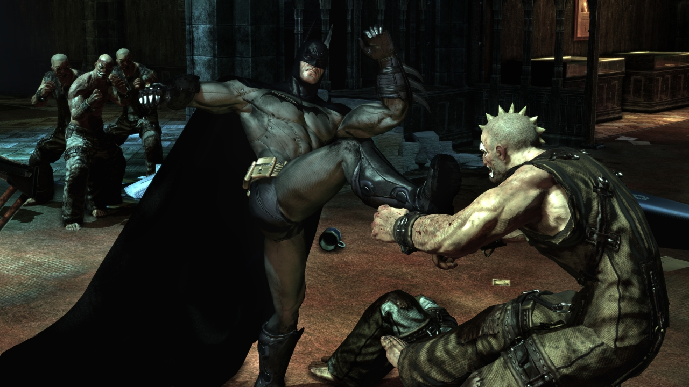

Las expectativas eran altísimas y se han cumplido. Como había dicho Eidos, como habían repetido los desarrolladores, como había avanzado la prensa y como querían todos los fans de Batman y jugadores en general, Batman: Arkham Asylum es el mejor juego de Batman nunca hecho, el mejor juego de superhéroes, y uno de los mejores títulos de acción del año. Los fans del hombre murciélago tienen motivos para estar muy contentos y correr mañana a las tiendas a hacerse como este desarrollo de Rocksteady: no solo es un gran juego de acción, también encaja a la perfección en el universo Batman, captando la estética y el tono de sus personajes, y ofreciendo una aventura creible del héroe de Detective Comics. Uno de sus más grandes retos, en el que tiene que hacer frente a la gran mayoría de sus enemigos, encabezados por el imprescindible Joker.
Como se sabe desde que el juego fue anunciado, Batman tendrá que internarse en el asilo de Arkham, centro de reclusión de la gran mayoría de sus enemigos, para hacer frente a un motín que se acaba de desencadenar entre los presos, encabezados por el Joker. Esta visita turística a uno de los lugares de Gotham menos conocidos es la excusa perfecta para que Batman se vuelva a encontrar y se enfrente con buena parte de su inmenso repertorio de villanos. No vamos a desvelar nada de la historia, aunque cualquiera puede imaginarse qué personajes van a estar seguro en el juego. Obviamente, el Joker es el cabecilla pero no solo ejerce de malo reconocible o de némesis.
Su presencia es integral en el juego, del mismo modo que lo fue, encarnado por el difunto Heath Ledger, en la última película de Batman. El Joker tiene el control del asilo y nos habla por radio, lo oiremos hablar con sus secuaces, hablaremos decenas de veces con él por videoconferencia, y hasta será quien nos dé consejos sobre cómo sobrevivir cada vez que muramos. Es una gran aventura con un montón de personajes, pero en el fondo, al más puro estilo Batman, es un enfrentamiento de dos personalidades completamente diferentes: el frío, calculador y atormentado Batman, y el chalado del Joker, que en esta ocasión es estéticamente su versión más clásica, pero a nivel de loco se acerca al de la película de El Caballero Oscuro anteriormente mencionada.
Arkham Asylum es un juego de acción y exploración en tercera persona que cuenta con grandes aciertos. El primero, un sistema de combate sencillo, pero que se complica no por más controles o acciones sino por enemigos más numerosos y peligrosos, y que favorece la sincronización y la atención a la pantalla. Batman tiene que estar pendiente de cuándo le atacan los enemigos y, sobre todo, si están armados con armas de fuego o cuchillos.
Éste es un punto fuerte del juego pero solo una de sus facetas. Lo que hace brillantemente Arkham Asylum es brindarnos una de las facetas más desconocidas de Batman, no porque no la hayamos visto en películas, comics y, sobre todo, la serie de televisión de los 60, sino porque nunca había estado presente en un videojuego: Batman es el mejor detective del mundo. Y cuenta con grandes medios para ello, como un contacto 24/7 con su batcueva, que le proporciona análisis de huellas y rastros, y un modo detective, que activaremos pulsando un botón, en el que veremos el escenario resaltado por colores: los enemigos armados con armas de fuego, en rojo, los objetos del escenario con los que podemos interactuar, en naranja, y todo ello interactivo con el cursor/punto de mira que hay en el medio de la pantalla.

La otra "modalidad" importante del juego es la de las incursiones sigilosas. Batman es un buen luchador y el mejor detective, pero también el hombre murciélago, especialista en pasar desapercibido, en sorprender a los enemigos, dejarlos fuera de combate y que el terror se apodere de ellos. Para ello tendremos varias técnicas de infiltración y varias formas de acabar con los enemigos sin que se den cuenta los demás. En estas partes, generalmente habitaciones de gran tamaño repletas de salientes en el techo por los que balancearnos, nos enfrentaremos a varios enemigos armados con ametralladoras que acabarán con nosotros si nos exponemos un par de segundos.
Por ello tendremos que balancearnos entre los salientes del escenario (generalmente gárgolas), usar los batarangs para desarmar temporalmente a los enemigos, y aprovechar esquinas, o recovecos del escenario como túneles de ventilación o dobles suelos, para que los enemigos no nos vean. Tenemos amplia libertad para dejarlos fuera de combate y sorprenderlos, y de hecho no es imprescindible que no nos descubran... pero si no lo hacen veremos como los enemigos se ponen cada vez más nerviosos y son más ineficaces, comprobando con el modo detectiveque sus pulsaciones se disparan.
El tercer gran acierto de Arkham Asylum es su impresionante ritmo y diseño. No nos referimos a la rapidez de los combates ni a lo enrevesado de los niveles, sino cómo Rocksteady Studios ha conseguido, con una aventura estrictamente lineal, alternar cada una de las situaciones del juego, el combate, las incursiones, la exploración, algún que otro puzle, la búsqueda de los numerosos secretos opcionales... Ha logrado que cada una de esas facetas "gotee" de vez en cuando, haciendo que rutinas que podrían convertirse en repetitivas no lo sean, por la magistral alternancia entre ellas, junto con escenas cinemáticas, otras partes del juego menos importantes, y los enfrentamientos con los jefes finales: el cuarto acierto.

Curiosamente y al contrario de lo que pasa con la mayoría de los títulos que llegan con gran expectación, el apartado gráfico de Batman no es su punto fuerte. Está a un gran nivel, haciendo un buen uso del Unreal Engine para recrear los tétricos y góticos escenarios de Arkham, pero no está entre lo mejor que podemos encontrar actualmente en PlayStation 3 y Xbox 360, no hará que la mandíbula se nos caiga al suelo. Es un trabajo notable, logrando que el juego se mueva con fluidez y mostrando un muy buen trabajo en el modelado de Batman, cuyo traje va deteriorándose poco a poco, en su animación y en ciertos personajes. En los enemigos estándar se nota algo menos de esmero, tanto en la variedad de ellos como en su modelado y nivel de detalle, y entre los escenarios, aún estando todos a un muy buen nivel, los hay claramente mejores o peores. Los efectos gráficos son notables pero únicamente destaca el que se aplica a la hora de resaltar las huellas que seguimos en el escenario.
El apartado sonoro sí que brilla con luz propia, estando el juego completamente traducido y doblado al castellano, con unas voces de gran calidad, y contando con una banda sonora muy variada que ambienta muy bien las diferentes situaciones y "estados" del juego; desde la desquiciante locura del Joker hasta las escenas de combate, pasando por los momentos de peligro o ansiedad de Batman, la música aporta este toque extra de ambientación, sin destacar por una melodía u otra, pero fundiéndose con lo que Batman está experimentando. Un trabajo sobresaliente.
El modo historia tiene una duración más que notable, y un considerable nivel de secretos y extras que obtener. Desde las conversaciones de cada uno de los presos célebres de Arkham con el psicólogo, hasta los enigmas de Enigma, que nos plantea en muchas habitaciones analizar el escenario para resolver un acertijo u otro, y otros retos que a veces se convierten en logros y trofeos.
No estamos ante un juego que se haya hecho basado en una película ni en una de esas herramientas para exprimir una licencia y convertirla en dólares, se trata de un videojuego de acción que aprovecha un rico mundo con el que todo el mundo está más o menos familiarizado, pero independientemente de lo que conozcamos a Batman nos engancha. A los que solo conocen la historia de por qué se convirtió en el hombre murciélago les contará mucho más sobre la personalidad y trayectoria de Batman, y sobre todo de la de los enemigos, y aquéllos fans de Batman de toda la vida, los que compraban los tebeos de la desaparecida Zinco, se sentirán más que agradados por el tratamiento del personaje y del universo Batman, aunque se haya reducido esta vez a la tétrica isla donde se ubica el asilo.
Como videojuego, como ya decimos, resulta un ejemplo magistral de cómo plantear varias formas de jugar diferentes, o minifases, de forma lineal, y hacer que ni parezca lineal, ni que se vuelva repetitivo o tedioso; al contrario, es muy adictivo gracias a cómo va evolucionando la historia, cómo se va descubriendo qué es lo que trama el Joker, y sobre todo gracias a la personalidad de los villanos encabezados por este último. Aparte, cuenta con varios extras, como el modo desafío o las biografías de villanos, aparte de contenido descargable. No solo es el mejor juego de Batman, cosa que no era difícil, ni el mejor juego de superhéroes nunca hecho, cosa que era algo menos fácil pero tampoco una odisea. Es también uno de los mejores juegos de acción de este año.